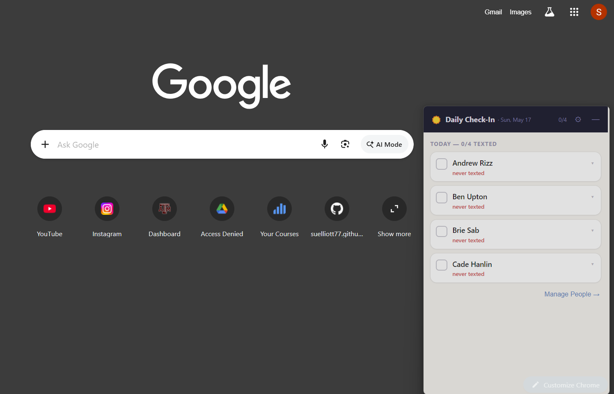
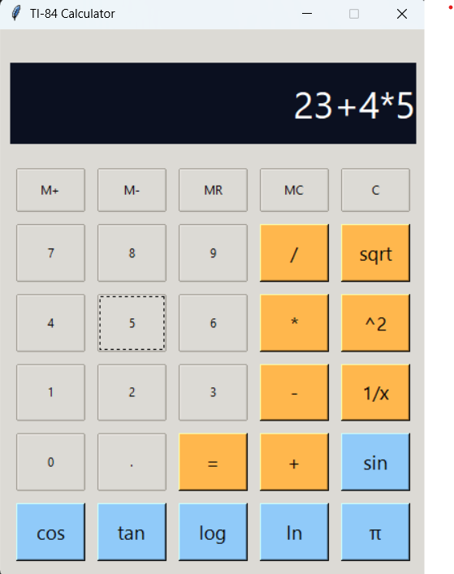
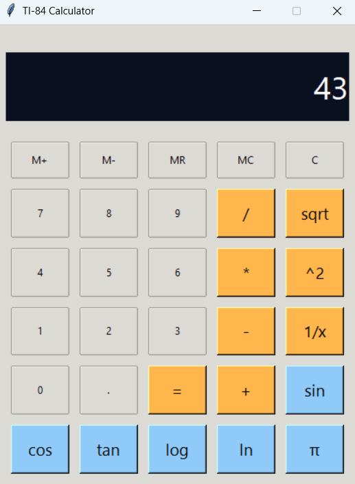
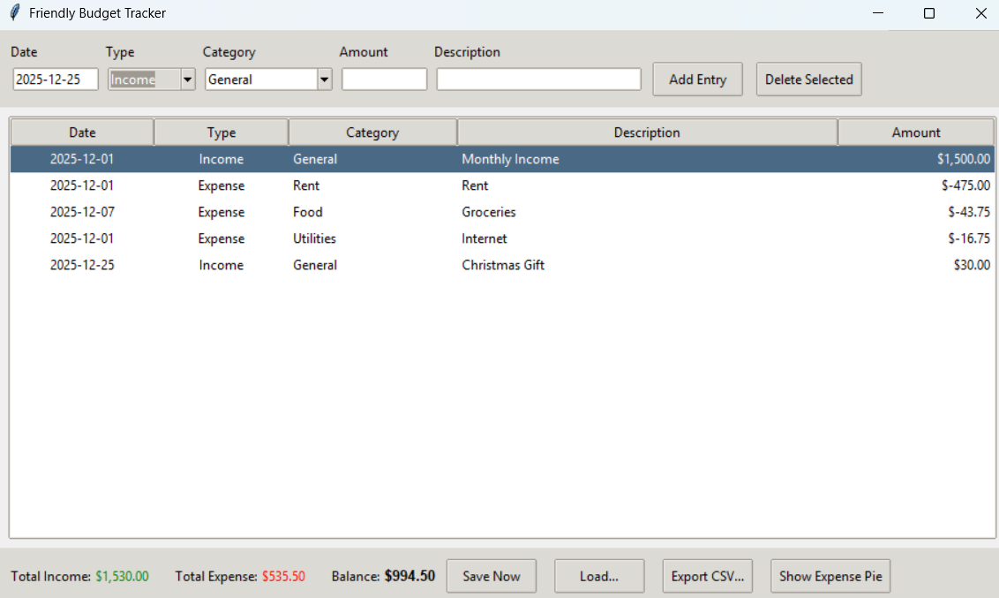
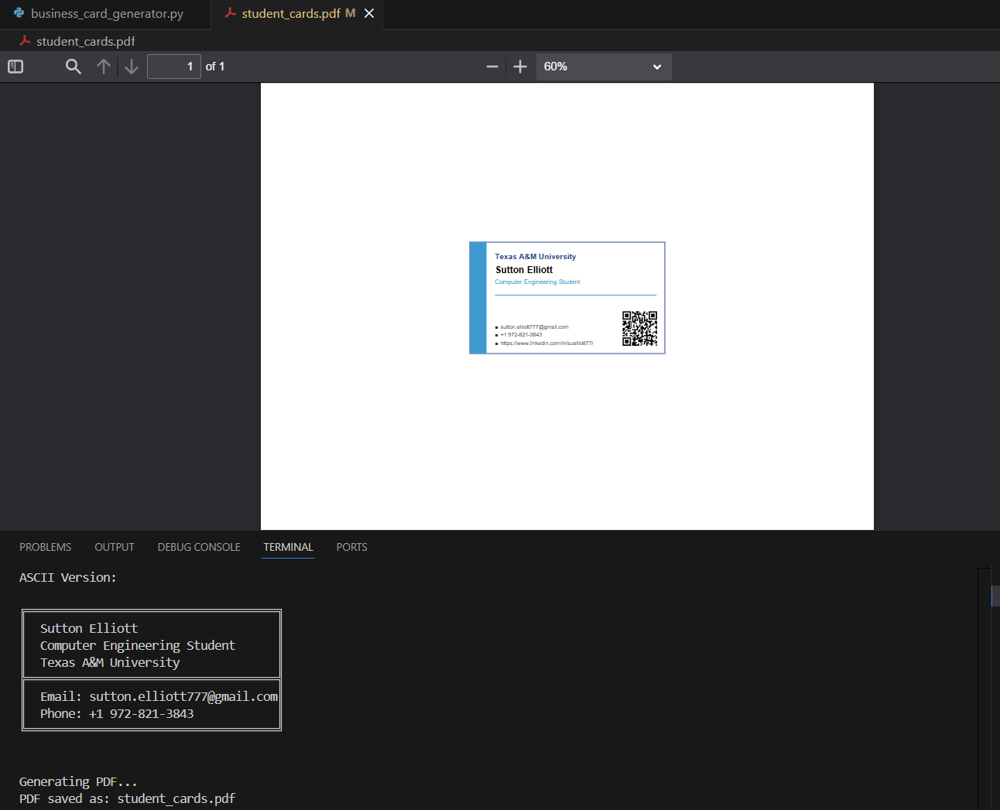
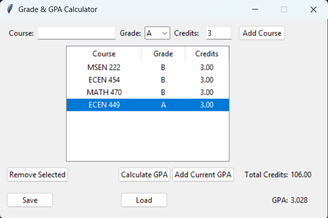
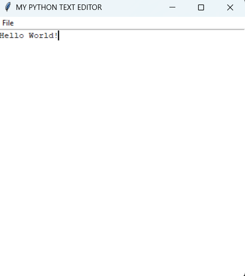

Personal Projects
Small Builds, Experiments, and Curiosity-Driven Projects
Small Builds, Experiments, and Curiosity-Driven Projects
This page highlights a collection of smaller personal projects and experiments developed outside of formal coursework. Each project reflects an interest in practical problem-solving, system design, and hands-on learning through building real, usable tools.
Many of these projects were driven by personal curiosity and a desire to explore how software can simplify everyday tasks. Rather than building for assignments alone, I created tools that I could realistically use to make my own life a little easier or give myself flexible options when solving common problems.
Through these projects, I focused on translating ideas into working systems, experimenting with different approaches, and refining implementations through iteration. Collectively, they demonstrate a willingness to learn independently, explore new concepts, and apply technical skills in practical, real-world contexts.

Built a lightweight Electron app that lives in the corner of your screen and reminds you to stay connected with the people you care about. Each day it surfaces a rotating list of contacts — prioritizing whoever you haven't reached out to in the longest time — so staying in touch becomes a deliberate habit rather than an afterthought.


Designed and implemented a functional recreation of a TI-84-style calculator with an emphasis on accurate mathematical evaluation and robust user input handling. The project focused on translating formal mathematical rules into executable program logic while maintaining internal calculator state.

Developed a personal budgeting application to track income and expenses, analyze spending patterns, and calculate monthly financial summaries. The project emphasized data organization, accuracy, and user-friendly interaction.

Created a business card generator that dynamically produces professional-looking cards based on user-provided information. The project focused on layout formatting and automated document creation.

Built a grade calculation tool to compute weighted averages and final course grades based on assignment and exam scores. The project emphasized correctness, flexibility, and ease of use.

Developed a lightweight text editor supporting basic file creation, editing, and saving functionality. The project focused on user interface design, responsiveness, and reliable file management.
Additional personal projects and experiments will be added here as I continue exploring new tools, languages, and systems.